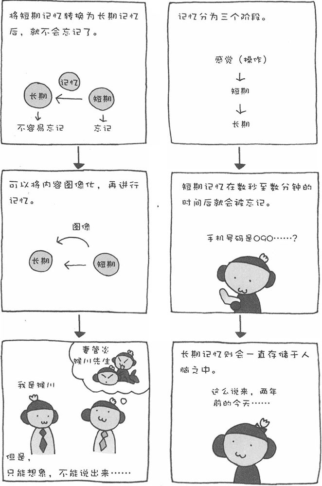

有时，遇到熟人时就是想不起对方的名字；有时，多年前的一次无聊谈话，却可以清晰地回想起来……记忆就是这么不可思议！对于人类而言，记忆是非常宝贵的能力。可是，时至今日，我们依然没能完全揭开其中的秘密。科学家阿特金森和西富林认为，记忆由短期记忆和长期记忆构成。此外，除了上述两个阶段的记忆外，当感觉器官将接收到的信息向短期记忆发送之前，还有一个感觉记忆阶段。
■ 感觉记忆
眼睛、鼻子、皮肤等感觉器官获得的信息，会被人记忆一瞬间，然后就将其删除了。如果没有"删除功能"，刚才接触的床和地板时的感觉都会清晰地记得，这样会导致生活非常不方便。因此，我们会从无数的信息中，选择有价值的内容，并将其传送到短期记忆。
■ 短期记忆
短期记忆，是指储存时间很短的记忆。如果用随机数字的位数来形容短期记忆的容量，大约为7位±2位。如果是有意义的内容，可以多少减轻记忆的负担，甚至还可以多记忆一些。不管怎么说，短期记忆存储的时间很短，大约在20秒以内，而20秒以上就会忘记。只有将短期记忆的内容反复记忆，或者为其赋予很强的意义，才能将其转变为长期记忆。
■ 长期记忆
长期记忆，就是我们一般称为"记忆"的存储信息。存储于长期记忆中的信息，基本上不会忘记。然而，随着时间的流逝，长期记忆的内容也会变得模糊。在很多情况下，如果没有一个"引子"，很多久远的记忆都不会轻易、主动地浮现出来。也有学者认为，长期记忆和睡眠有着密切的关系。
